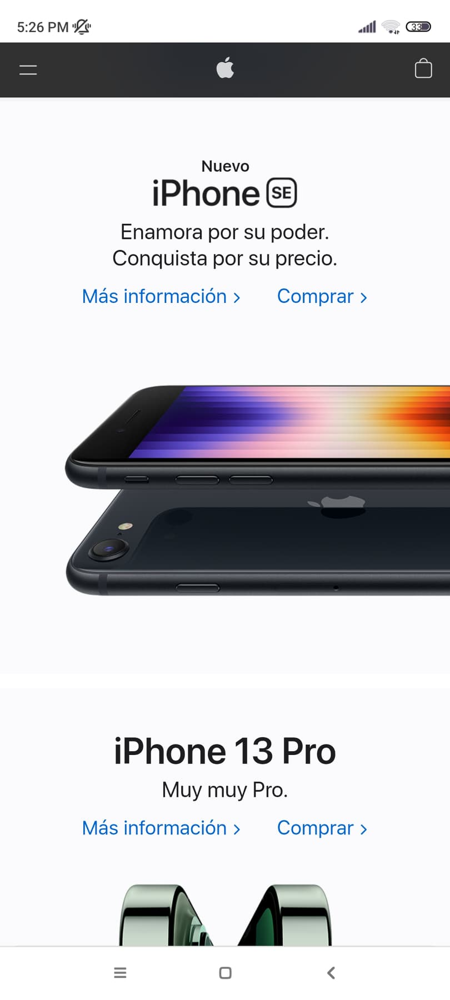
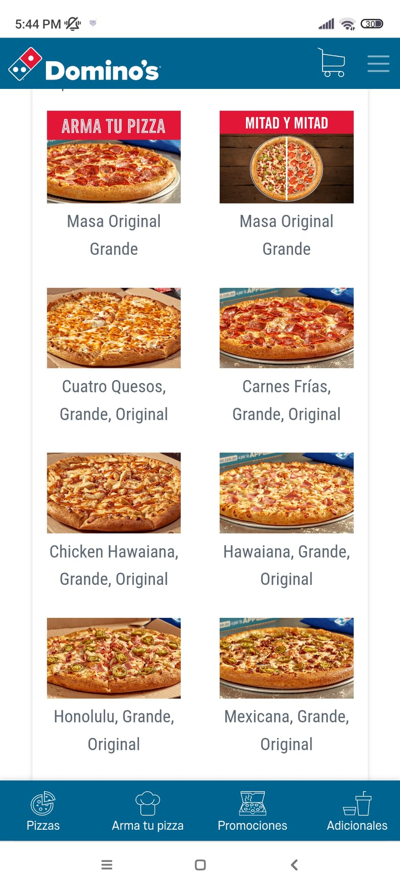

Desing Principles Document
Jose Enrique Terrones Nava
Hick's Law
Amazon
Amazon.comThere are not too many options on the screen and, it gives you time to see the whole page with ease;
it is not saturated with items but, it shows you what is necessary to do what the user is interested in
White Space and Clean Desing
Apple
Apple.com It makes good use of contrast and white space;
it feels harmonious on the page, the sections are well aligned, and it leaves enough space between lines.
Makes a good game with the images and the colors
Fitt's Law
Domino's Pizza
Dominos.com It is easy to access the buttons; they are well-positioned and have good size, neither big nor small.
On mobile devices, you can comfortably scroll without much difficulty.